FAQ
Panduan untuk mengatasi kendala login pada SIAKAD ULBI dan email kampus Microsoft.
Ikuti langkah berikut untuk mengganti password akun yang digunakan untuk login ke SIAKAD.
1
Buka terlebih dahulu Sistem Informasi Akademik (SIAKAD ULBI), kemudian klik “Lupa kata sandi?”.
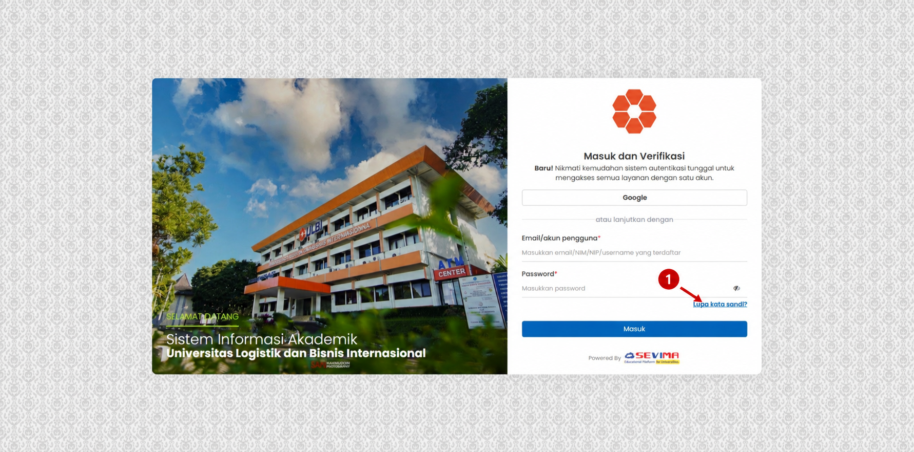
2
Masukkan email akun yang sudah terdaftar pada halaman Pemulihan Akun.
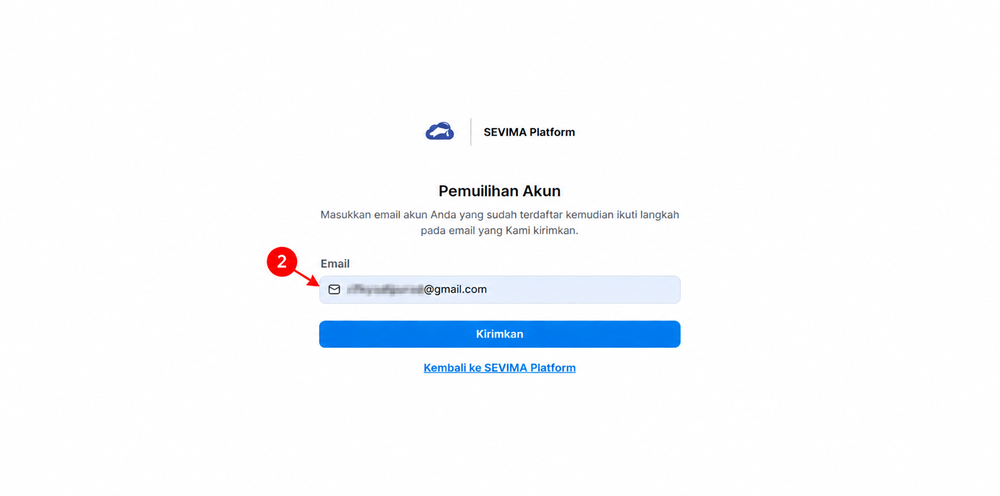
3
Klik tombol “Kirimkan” untuk mengirim permintaan pemulihan akun.
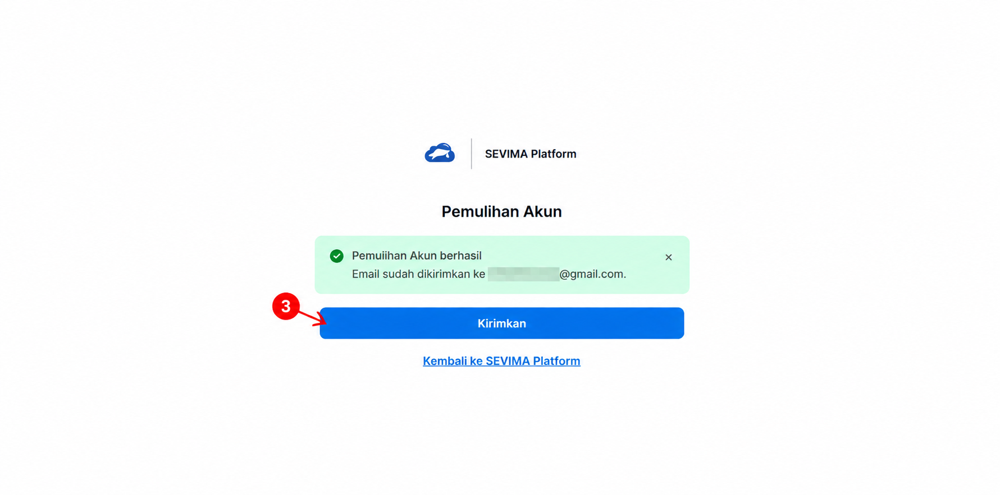
4
Buka email dari SEVIMA Platform SSO dengan subjek “Pemulihan akun SEVIMA Platform”.
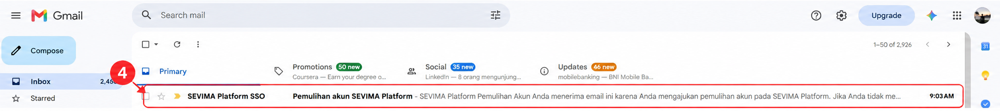
5
Pada email tersebut, klik tombol “Buat Password Baru”.
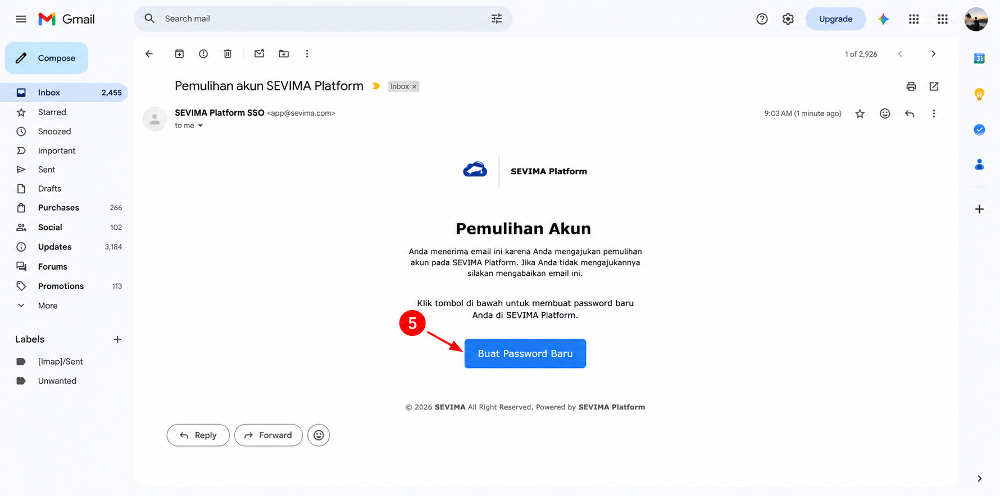
6
Masukkan Email, Password Baru dan masukkan kembali pada Ulangi Password Baru.
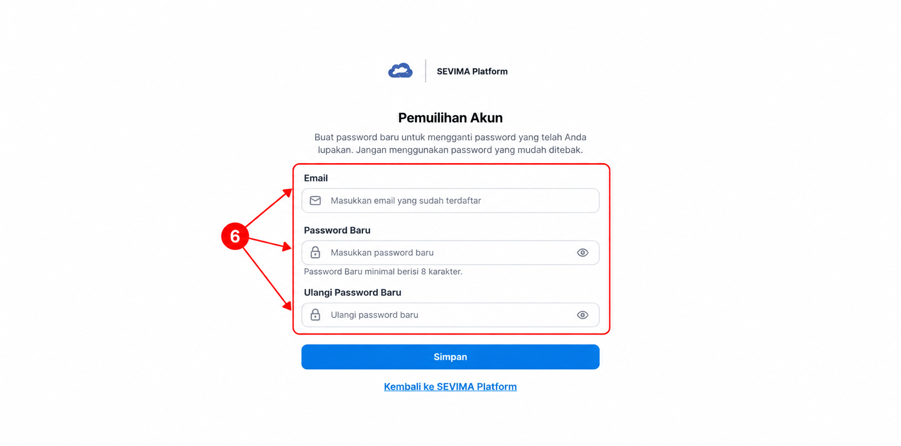
7
Klik tombol “Simpan” untuk menyimpan password baru.
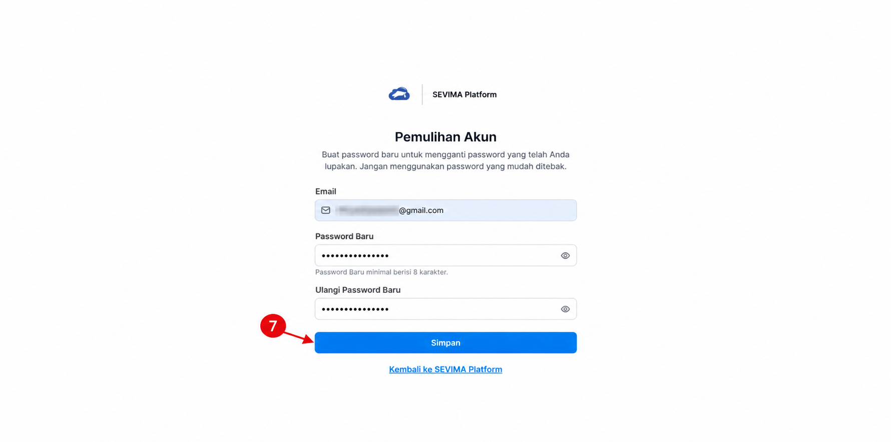
8
Jika muncul pesan “Pemulihan Akun berhasil”, login kembali ke SIAKAD menggunakan password baru.
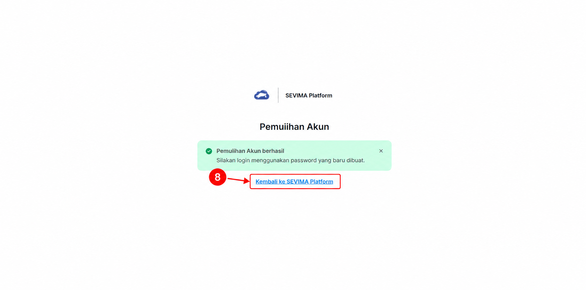
Ikuti langkah berikut untuk mengajukan reset password email kampus Microsoft. Permintaan reset akan diproses oleh admin atau tim Helpdesk ULBI.
1
Pada halaman login Microsoft, ketikkan email institusi Anda. Saat diminta memasukkan sandi, klik tautan “Forgot my password”.
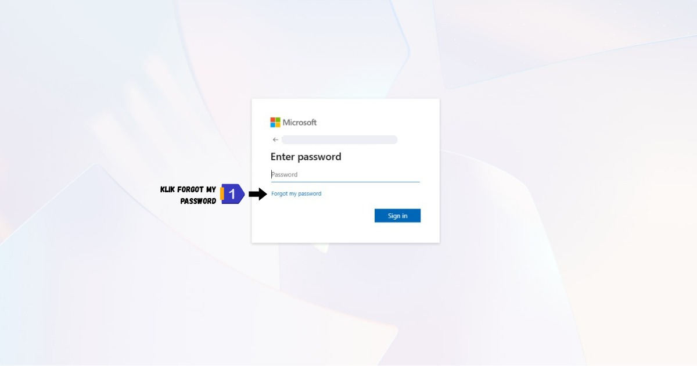
2
Anda akan diarahkan ke halaman pemulihan akun “Get back into your account”. Pastikan email pada kolom sudah benar.

3
Jika email sudah sesuai, klik tombol “Next” di bagian bawah halaman.
4
Sistem akan menampilkan pesan bahwa reset mandiri tidak dapat dilakukan. Klik tautan “contact your administrator” agar permintaan reset diteruskan ke sistem.
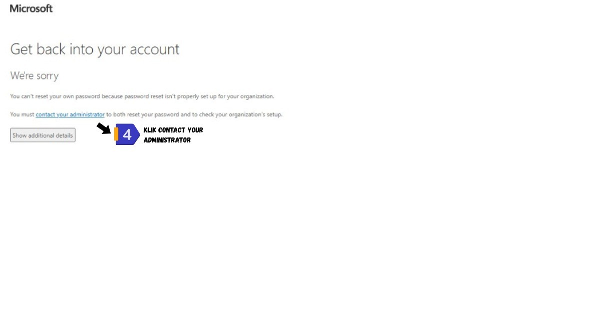
5
Muncul konfirmasi “Your admin has been notified”. Artinya pergantian password sedang diproses oleh tim Helpdesk ULBI. Silakan tunggu dan cek email secara berkala.
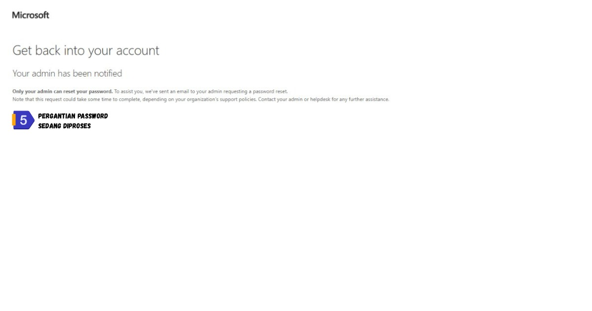
6
Setelah password diganti oleh admin, buka halaman profile card Helpdesk ULBI untuk melihat password email kampus yang baru.
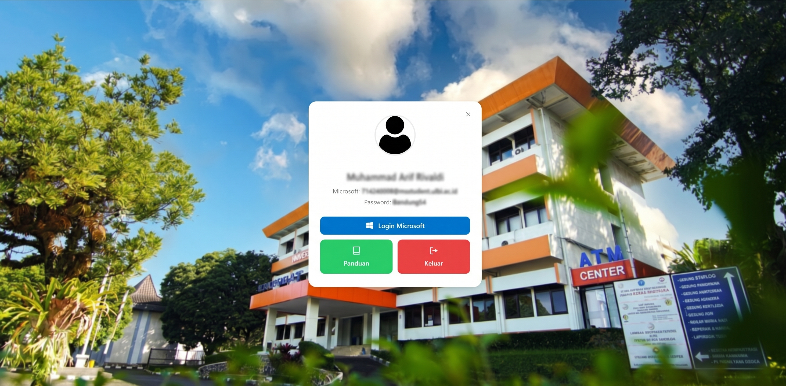